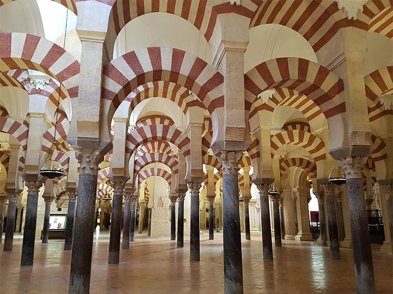

Mezquita

La Mezquita-Catedral de Córdoba (Patrimonio de la Humanidad desde 1984) es el monumento más importante de todo el Occidente islámico y uno de los más asombrosos del mundo. En su historia se resume la evolución completa del estilo omeya en España, además de los estilos gótico, renacentista y barroco de la construcción cristiana. El lugar que hoy ocupa nuestra Mezquita-Catedral parece haber estado, desde antiguo, dedicado al culto de diferentes divinidades. Bajo dominación visigoda se construyó en este mismo solar la basílica de San Vicente, sobre la que se edificó, tras el pago de parte del solar, la primitiva mezquita. Esta basílica, de planta rectangular fue compartida por los cristianos y musulmanes durante un tiempo. Cuando la población musulmana fue creciendo, la basílica fue adquirida totalmente por Abderraman I y destruida para la definitiva construcción de la primera Mezquita Alhama o principal de la ciudad. En la actualidad algunos elementos constructivos del edificio visigodo se encuentran integrados en el primer tramo de Abderraman I. La gran Mezquita consta de dos zonas diferenciadas, el patio o sahn porticado, donde se levanta el alminar (bajo la torre renacentista), única intervención de Abd al- Rahman III, y la sala de oración o haram. El espacio interior se dispone sobre un concierto de columnas y arcadas bicolores de gran efecto cromático. Cinco son las zonas en las que se divide el recinto, correspondiendo cada una de ellas a las distintas ampliaciones llevadas a cabo.